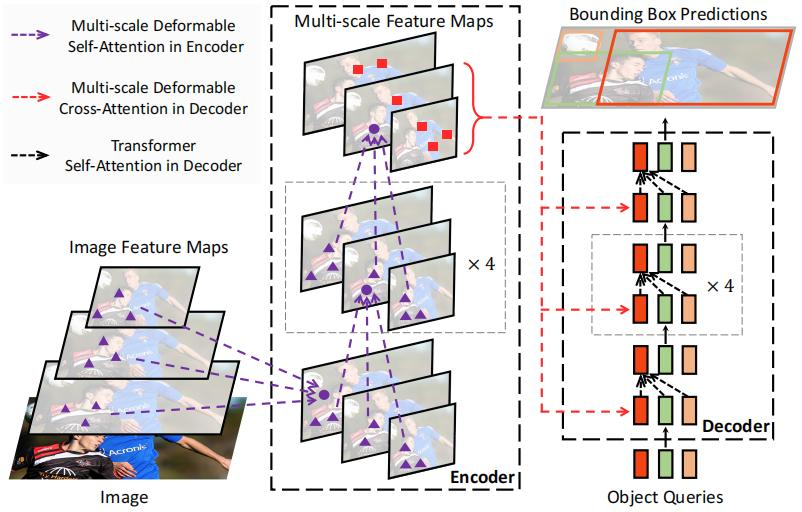
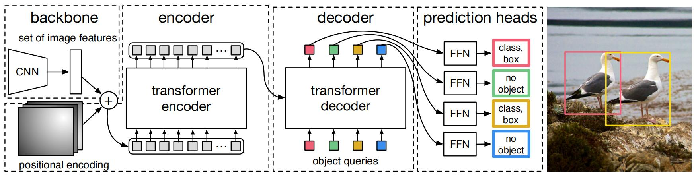
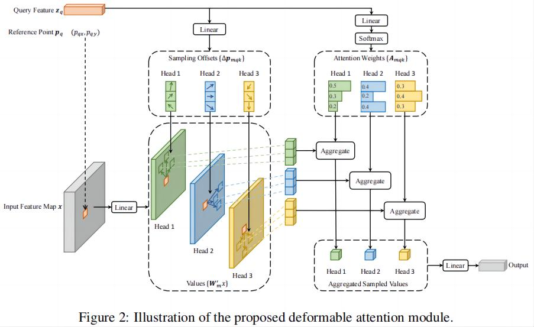

Deformable DETR——笔记¶
综述¶
会议时间：ICLR 2021
主要思想¶
DETR是第一个利用Transformer实现的端到端的目标检测算法，大大简化了目标检测算法的实现过程，但是他仍存在两个问题：①与现有目标检测算法相比，它需要非常长的训练时间来收敛，收敛速度特别慢（在COCO数据集上，需要500个epoch才能收敛）；②DETR难以检测小目标。如今的目标检测算法通常使用多尺度特征来检测不同尺度下的物体，在高分辨率图像中检测小物体，但是DETR中的多头注意力运算模块对特征尺寸非常敏感，对于一张高分辨率的特征图会产生难以估计的计算量（复杂度呈平方增长）。
多头注意力模块初始化后，在计算特征映射时，每个像素点都会与特征图中所有像素点产生一次注意力运算，并且所有的注意力会施加几乎一样的注意力权重，而注意力运算的目的肯定是想要让注意力权重集中在某几个区域，这也是注意力模块的优化趋势，对于每个像素点来说，从大量的区域中挑选出几个有意义的区域是非常难的，这也是为什么DETR训练周期很长的一个重要原因，而且训练的时长也会和特征图尺寸密切相关；同时，TF编码器中的注意力运算与像素数值呈平方变化关系，因此高分辨率图像在计算注意力时会产生非常高的计算消耗。
注意问题的逻辑关系：稠密的注意力运算要求大量的注意力权重，优化这些权重需要很长的训练时间，因此导致DETR收敛慢（问题1），这一问题同样是Transformer模块处理图像数据时的通病，不同于自然语言，图像数据本身具有信息稀疏的特点，特征数据尺寸非常大，利用稠密的注意力会产生很多冗余的计算量（注意力是解决信息稀疏的一个有效策略，会提升算法性能上限，但是稠密的注意力机制会大大增加计算量，会抬高算法成本，注意底层逻辑关系，引入一个模块在解决某个问题的同时也会引入新的问题）；同时传统的Transformer计算量与特征尺寸密切相关，分辨率高的特征会大大增加注意力的计算量，因此直接导致算法不能利用浅层特征做检测，即不能利用多尺度特征做预测，从而导致算法在检测小目标物体上性能不好。
对于这一问题，一种有效的解决方法就是将稠密的注意力运算转为稀疏的注意力运算，在图像领域中，可变形卷积是一种处理稀疏空间位置强大而有效的机制，其中的稀疏采样思想可以应用到Transformer注意力机制中，进一步改进注意力的计算策略。
本文中，作者提出了可变形的DETR算法（Deformable DETR），缓解了原始DETR中收敛速度慢以及计算复杂度高的问题。作者提出了可变形注意力模块，它同时结合了可变形卷积中稀疏空间采样的优点和Transformer中位置关系建模的能力，让每个元素关注一小组采样位置，作为特征图所有像素中突出的k数据元素的预滤波器。该模块可以自然地扩展到聚合多尺度特征，而无需FPN的帮助，在Deformable DETR中，作者使用（多尺度）可变形注意力模块来代替传统的Transformer注意力模块，具体如下图所示：

注：利用可变形注意力运算代替传统的注意力运算，在提升算法计算速度的同时，肯定也会降低模型检测精度的上限（会在一定程度上削弱模型的特征表示能力），注意这种平衡取舍的关系。换句话说，如果有大量的训练数据，并且对检测速度没有要求，则利用传统的Transformer做注意力运算效果更好。
方法¶
DETR网络结构：

可变注意力模块¶
将Transformer应用于图像特征提取的过程中时，存在一个核心的问题：Transformer模块会考虑所有空间位置的权重，为了解决这一问题，作者提出了可变注意力模块。受到可变卷积模块的启发，可变注意力模块只关注参考点周围的一小部分关键采样点，不考虑特征图的尺寸大小，如下图所示，通过为每个查询query分配少量、固定数量的键keys（这里的键也就是参考点，即后面的采样点），q中每个元素和固定数量的键k做相似度计算，大大减少了计算量（原来的k是整个特征图，现在只选取其中少量的特征数据），可以减轻收敛慢和特征空间分辨率大所带来的问题。
注：注意力计算的本质，就是对于q中每个元素，计算与k的相似度，进一步对 k对应的v 做加权操作，求出q对应的’v’。

给定一个输入特征图x\in R^{C\times H\times W}，假设q表示一个带有内容特征z_q和二维参考点p_q的查询向量，可变注意力特征的计算公式可以表示为：
可变形注意力模块用于处理关键元素的卷积特征，设N_q为查询元素的数量，当MK较小时，可变卷积模块的复杂度为O(2N_qC^2+\min(HWC^2,N_qKC^2))，将其应用于DETR的编码器时，有N_q=HW，复杂度变为O(HWC^2)，复杂度与空间大小呈线性关系，当其应用于DETR的解码器时，有N_q=N（N为物体查询向量的数量(object queries)），复杂度变为O(NKC^2)，与空间尺寸HW无关。
注：对于特征图上的每个像素点，传统的多头注意力机制，会对特征图上所有的点都求一次权重，即特征图上所有的点都会对该点产生影响，计算量比较大，而且比较冗余，在可变形注意力模块中，只会选取图里的K个点求一次权重，即只选取对当前点影响比较大的K个点，来对当前点产生影响，大幅度减小了运算量。
多尺度可变注意力模块¶
由于多尺度特征可以灵活表示大物体和小物体，当前大部分目标检测算法都用到了多尺度特征，本算法的可变形注意力模块可以自然地扩展到多尺度特征图上。
假设\{x^l\}^L_{l=1}为多尺度特征图，其中x^l\in R^{C\times H_l\times W_l}，假设\hat p\in[0,1]^2为每个查询向量q参考点的归一化坐标，多尺度可变注意力模块可以表示为：
当K=L=1，并且W_m'\in R^{C_v\times C}固定为单位矩阵时，所提出的注意力模块将退化为可变形卷积，可变形卷积是为单尺度输入设计的，每个注意力头只集中在一个采样点上。然而，我们的多尺度可变形注意力会查看来自多尺度输入的多个采样点，所提出的（多尺度）可变形注意力模块也可以视为Transformer注意力机制的有效变体，其中可变形采样定位引入了预滤波器机制（pre-filtering），也就是只在采样点上做滤波操作（即加权求和操作），当采样点遍历所有可能的位置时，所提出的可变形注意力等同于Transformer注意力。
这里可变形卷积是为单尺度输入设计的是啥意思？再看看可变形卷积那块；
可变形的TF编码器¶
作者利用多尺度可变形注意力模块替换了DETR中的TF编码器，编码器的输入和输入具有相同分辨率的多尺度特征，在编码器中，我们从ResNet中C3到C5阶段输出的特征图提取多尺度特征图\{x^l\}^{L-1}_{l=1}(L=4)（其中ResNet输出的特征会首先经过一层1\times1的卷积层，用于统一特征图的通道数，统一成256），其中C_l的分辨率是输入图像的\frac{1}{2^l}倍，注意，分辨率最小的特征图x^L是由C5的输出经过一层卷积核为3\times3，并且步长为2的卷积层得到，定义为C6，所有的特征图通道数均为256。注意，作者并没有用到FPN中自顶向下的结构，因为所提出的多尺度可变形注意力模块本身就可以在多尺度特征映射之间进行信息交换，TF序列间的建模能力实现了这一点。（论文的附录中验证了，引入FPN结构不会提高模型最终的性能）
在编码器中应用多尺度可变形注意力模块，输出是与输入分辨率相同的多尺度特征图，键和查询元素都是来自多尺度特征图的像素，对于每个查询向量的像素，参考点是其本身，为了识别每个查询像素所处的特征级别，除了嵌入位置编码以外，作者还在特征表示中添加了一个尺度编码，表示为\{e_l\}^L_{l=1}，与位置编码不同（位置编码是固定的），尺度编码是随机初始化的，并且与网络共同训练。
可变形的TF解码器
解码器中有交叉注意力模块和自注意力模块，这两种注意力模块的查询元素（即q值）都是物体查询向量Q，在交叉注意力中，物体查询向量从特征图中提取特征，键（k）为从编码器输出的特征图；在自注意力模块中，物体查询相互交互，键（k）为物体的查询向量。由于提出的可变形注意力模块是为了处理卷积特征映射作为键（k）值元素，因此作者只将每个交叉注意力模块替换为多尺度可变形注意力模块，保持自注意力模块结构不变。对于每个物体查询向量，2D参考点\hat p_q归一化后的坐标通过可学习的线性投影和一个sigmoid函数从其对象查询嵌入中预测。
由于多尺度可变形注意力模块提取参考点周围的图像特征，因此我们让检测头预测的边界框作为相对于参考点的相对偏移量，从而进一步降低优化难度，参考点以框中心作为初始化数据。这样，学习到的解码器注意力与预测的边界框具有很强的相关性，进一步加快了网络的收敛。
Deformable DETR的提升
迭代边界框的细化：受到光流估计中开发迭代细化的启发，为了提高目标检性能，作者建立了一种简单有效的迭代边界框细化机制，在这里，每个解码器层基于前一层的预测来细化边界框。
二阶段Deformable DETR：在原始的DETR中，解码器中的物体查询向量Q与当前图像无关，受二阶段目标检测器的启发，作者探索了一种Deformable DETR的变体，即二阶段Deformable DETR目标检测器，第一阶段检测到的边界框当做区域建议（proposals），之后进一步传入第二阶段中，充当物体查询向量，用于细化所预测的边界框位置。
注：在第一阶段，为了实现高召回率的提议，这里的查询向量Q是以图像特征的形式输入到解码器中，和一阶段的不一样，一阶段的Q是一组预设好形状、可学习的参数。这里多尺度特征中的每个特征像素都将作为物体查询向量，然而，这么做会带来非常大的计算量，计算复杂度随着查询数量（即图像尺寸）的增加而呈二次增长。为了避免这个问题，作者在第一阶段中去掉了解码器，形成了一个只有编码器的Deformable DETR来生成区域建议，其中每个像素点直接用来预测一个边界框，选取得分最高的边界框作为区域建议，在像第二阶段提供区域建议之前，不应用NMS。
源码实现¶
流程¶
backbone模块
- 图像先经过backbone（一般由CNN组成），得到多个层级的特征图，根据特征图尺寸预设位置编码（这里的位置编码是固定的数据，x、y分别与sin、cos运算有关）；
- 不同层级特征图通道数不一样，不能直接传入TF编码器，因此像FPN一样，先统一通道数，通道数统一成256；
TF模块
- 根据不同层级，预设多组特征层编码（这里特征层编码为可学习的参数，尺寸为[层数，256]），先将图像特征拉直，变为序列特征，并且将不同层级的序列特征合并，合并为一个总的序列特征；
- 并且将图像的位置编码与特征层编码相加，用于表示图像每个图像特征的层级和位置信息，简称图像的信息编码；
编码模块
- 生成参考点坐标数据：对于每个层级特征，将其视为一个网格，网格上的点就是参考点（每个坐标点对应一个特征点），坐标数据从左上到右下依次增大，并且特征层越深，特征图越小，相邻参考点的数值跨度就越大，默认每个特征点生成四个参考点；
- q为图像编码特征与信息编码相加后的数据、v为单纯的图像编码特征。将v传入线性映射，得到计算注意力前所用的v；模型利用q预测参考点在x、y上的偏移量、以及各个参考点的权重（解释：每个注意力点到底在哪，并且注意力的侧重力度有多大，只跟查询q有关，因为注意力和核心目的就是要得到查询q对应的’v’值）；
- 参考坐标点与预测的偏移量相加，得到采样点坐标；
- 将v、采样坐标点、注意力权重传入可变形注意力计算模块，计算注意力数据；
- 之后计算TF模块中剩余的部分（残差映射、LN、FFN等等）；
注：可变形注意力模块降低计算量的本质，就是减少q在计算注意力时所参考的点，传统的多头注意力，对于q中每个元素，都要逐一与k做一次注意力运算，得到权重，再与所有的v值加权求和，而可变形注意力模块就限定了参考点的个数，这里默认限定为4个，即q中每个元素，只与k中4个元素作注意力运算，得到的权重，在与v中对应的4个元素作加权求和，其中采样点坐标就是为了定位4个参考元素。
解码模块
- 预设一组物体查询向量Q、初始的解码特征tgt（二者类似，数据均为可学习的参数，尺寸均为[查询个数、特征维度]），将查询向量传入线性映射层，映射为2个数，表示边界框参考点坐标，参考点尺寸为[查询个数,2]（后续再复制4倍，每个物体查询采样4个点），这里计算参考点也是为了后续在解码过程中，引入可变形注意力运算；
- 先对查询向量、解码特征算一次自注意力（self-attention），其中q、k为解码特征tgt与查询向量Q相加，v为解码特征tgt，后面再经过残差映射、LN运算；
- 计算交叉注意力（可变形注意力运算），其中q为解码特征tgt与查询向量Q相加，尺寸为[查询个数,特征维度]，k为边界框参考点坐标，尺寸为[查询个数,4,2]，v为编码特征src，尺寸为[特征序列数,特征维数]。q先经过两次线性映射，得到参考点的偏移量和注意力权重，偏移量与参考点坐标相加，得到采样点，之后将v、采样点、注意力权重传入可变形注意力模块，计算注意力，最后再经过残差映射、LN、FFN；
注：
- 解码特征是随着解码的过程不断变化的，而查询向量Q在解码过程中是不变的，因此在每个解码模块中，q是不一样的，类似迭代优化表示；
- 论文中的两大改进点“迭代边界框的细化”和“二阶段Deformable DETR”，都是对物体的参考点坐标做操作，迭代边界框的细化是在每次解码模块过程中，都改进一次物体参考点坐标，类似迭代优化表示（原始方法，每个解码模块用的参考点坐标都一样）；二阶段的DeDETR，会在编码之后，先将编码特征传入一次解码器（额外设置的），解码得到的特征用于初始化物体参考点坐标（原始方法，参考点坐标的初始化由查询向量做一次线性映射得到）。
预测模块
- 根据得到的解码特征，预测边界框和类别，以类别为例，输出的数据尺寸为[查询个数、类别数]；
Transformer模块¶
class DeformableTransformer(nn.Module):
def __init__(self, d_model=256, nhead=8,
num_encoder_layers=6, num_decoder_layers=6, dim_feedforward=1024, dropout=0.1,
activation="relu", return_intermediate_dec=False,
num_feature_levels=4, dec_n_points=4, enc_n_points=4,
two_stage=False, two_stage_num_proposals=300):
super().__init__()
self.d_model = d_model
self.nhead = nhead
self.two_stage = two_stage
self.two_stage_num_proposals = two_stage_num_proposals
encoder_layer = DeformableTransformerEncoderLayer(d_model, dim_feedforward,
dropout, activation,
num_feature_levels, nhead, enc_n_points)
self.encoder = DeformableTransformerEncoder(encoder_layer, num_encoder_layers)
decoder_layer = DeformableTransformerDecoderLayer(d_model, dim_feedforward,
dropout, activation,
num_feature_levels, nhead, dec_n_points)
self.decoder = DeformableTransformerDecoder(decoder_layer, num_decoder_layers, return_intermediate_dec)
self.level_embed = nn.Parameter(torch.Tensor(num_feature_levels, d_model))
if two_stage:
self.enc_output = nn.Linear(d_model, d_model)
self.enc_output_norm = nn.LayerNorm(d_model)
self.pos_trans = nn.Linear(d_model * 2, d_model * 2)
self.pos_trans_norm = nn.LayerNorm(d_model * 2)
else:
self.reference_points = nn.Linear(d_model, 2)
self._reset_parameters()
def _reset_parameters(self):
for p in self.parameters():
if p.dim() > 1:
nn.init.xavier_uniform_(p)
for m in self.modules():
if isinstance(m, MSDeformAttn):
m._reset_parameters()
if not self.two_stage:
xavier_uniform_(self.reference_points.weight.data, gain=1.0)
constant_(self.reference_points.bias.data, 0.)
normal_(self.level_embed)
def get_proposal_pos_embed(self, proposals):
num_pos_feats = 128
temperature = 10000
scale = 2 * math.pi
dim_t = torch.arange(num_pos_feats, dtype=torch.float32, device=proposals.device)
dim_t = temperature ** (2 * (dim_t // 2) / num_pos_feats)
# N, L, 4
proposals = proposals.sigmoid() * scale
# N, L, 4, 128
pos = proposals[:, :, :, None] / dim_t
# N, L, 4, 64, 2
pos = torch.stack((pos[:, :, :, 0::2].sin(), pos[:, :, :, 1::2].cos()), dim=4).flatten(2)
return pos
def gen_encoder_output_proposals(self, memory, memory_padding_mask, spatial_shapes):
N_, S_, C_ = memory.shape
base_scale = 4.0
proposals = []
_cur = 0
for lvl, (H_, W_) in enumerate(spatial_shapes):
mask_flatten_ = memory_padding_mask[:, _cur:(_cur + H_ * W_)].view(N_, H_, W_, 1)
valid_H = torch.sum(~mask_flatten_[:, :, 0, 0], 1)
valid_W = torch.sum(~mask_flatten_[:, 0, :, 0], 1)
grid_y, grid_x = torch.meshgrid(torch.linspace(0, H_ - 1, H_, dtype=torch.float32, device=memory.device),
torch.linspace(0, W_ - 1, W_, dtype=torch.float32, device=memory.device))
grid = torch.cat([grid_x.unsqueeze(-1), grid_y.unsqueeze(-1)], -1)
scale = torch.cat([valid_W.unsqueeze(-1), valid_H.unsqueeze(-1)], 1).view(N_, 1, 1, 2)
grid = (grid.unsqueeze(0).expand(N_, -1, -1, -1) + 0.5) / scale
wh = torch.ones_like(grid) * 0.05 * (2.0 ** lvl)
proposal = torch.cat((grid, wh), -1).view(N_, -1, 4)
proposals.append(proposal)
_cur += (H_ * W_)
output_proposals = torch.cat(proposals, 1)
output_proposals_valid = ((output_proposals > 0.01) & (output_proposals < 0.99)).all(-1, keepdim=True)
output_proposals = torch.log(output_proposals / (1 - output_proposals))
output_proposals = output_proposals.masked_fill(memory_padding_mask.unsqueeze(-1), float('inf'))
output_proposals = output_proposals.masked_fill(~output_proposals_valid, float('inf'))
output_memory = memory
output_memory = output_memory.masked_fill(memory_padding_mask.unsqueeze(-1), float(0))
output_memory = output_memory.masked_fill(~output_proposals_valid, float(0))
output_memory = self.enc_output_norm(self.enc_output(output_memory))
return output_memory, output_proposals
def get_valid_ratio(self, mask):
_, H, W = mask.shape
valid_H = torch.sum(~mask[:, :, 0], 1)
valid_W = torch.sum(~mask[:, 0, :], 1)
valid_ratio_h = valid_H.float() / H
valid_ratio_w = valid_W.float() / W
valid_ratio = torch.stack([valid_ratio_w, valid_ratio_h], -1)
return valid_ratio
def forward(self, srcs, masks, pos_embeds, query_embed=None):
assert self.two_stage or query_embed is not None
# prepare input for encoder
src_flatten = []
mask_flatten = []
lvl_pos_embed_flatten = []
spatial_shapes = []
# 将图像特征拉直，变为序列特征，并且将图像的位置编码与特征层编码相加，赋予特征层信息，用于区分不同特征层的图像特征
for lvl, (src, mask, pos_embed) in enumerate(zip(srcs, masks, pos_embeds)):
bs, c, h, w = src.shape
spatial_shape = (h, w)
spatial_shapes.append(spatial_shape)
src = src.flatten(2).transpose(1, 2)
mask = mask.flatten(1)
pos_embed = pos_embed.flatten(2).transpose(1, 2)
# 位置编码 + 特征层编码，得到图像的信息编码，用于区分不同区域的特征
lvl_pos_embed = pos_embed + self.level_embed[lvl].view(1, 1, -1)
lvl_pos_embed_flatten.append(lvl_pos_embed)
src_flatten.append(src)
mask_flatten.append(mask)
# 不同特征层的特征沿层方向合并，合并为一个大的特征序列
src_flatten = torch.cat(src_flatten, 1)
mask_flatten = torch.cat(mask_flatten, 1)
lvl_pos_embed_flatten = torch.cat(lvl_pos_embed_flatten, 1)
spatial_shapes = torch.as_tensor(spatial_shapes, dtype=torch.long, device=src_flatten.device)
level_start_index = torch.cat((spatial_shapes.new_zeros((1, )), spatial_shapes.prod(1).cumsum(0)[:-1]))
valid_ratios = torch.stack([self.get_valid_ratio(m) for m in masks], 1)
# encoder 利用可变形注意力模块做编码
# src_flatten表示图像编码特征、spatial_shapes表示每个特征层级的尺寸、level_start_index表示特征序列的层级索引
# valid_ratios表示预设参考点坐标时x、y的比率，默认(1,1)，即不做变化
memory = self.encoder(src_flatten, spatial_shapes, level_start_index, valid_ratios, lvl_pos_embed_flatten, mask_flatten)
# prepare input for decoder
bs, _, c = memory.shape
if self.two_stage:
output_memory, output_proposals = self.gen_encoder_output_proposals(memory, mask_flatten, spatial_shapes)
# hack implementation for two-stage Deformable DETR
enc_outputs_class = self.decoder.class_embed[self.decoder.num_layers](output_memory)
enc_outputs_coord_unact = self.decoder.bbox_embed[self.decoder.num_layers](output_memory) + output_proposals
topk = self.two_stage_num_proposals
topk_proposals = torch.topk(enc_outputs_class[..., 0], topk, dim=1)[1]
topk_coords_unact = torch.gather(enc_outputs_coord_unact, 1, topk_proposals.unsqueeze(-1).repeat(1, 1, 4))
topk_coords_unact = topk_coords_unact.detach()
reference_points = topk_coords_unact.sigmoid()
init_reference_out = reference_points
pos_trans_out = self.pos_trans_norm(self.pos_trans(self.get_proposal_pos_embed(topk_coords_unact)))
query_embed, tgt = torch.split(pos_trans_out, c, dim=2)
else:
query_embed, tgt = torch.split(query_embed, c, dim=1)
query_embed = query_embed.unsqueeze(0).expand(bs, -1, -1)
tgt = tgt.unsqueeze(0).expand(bs, -1, -1)
reference_points = self.reference_points(query_embed).sigmoid()
init_reference_out = reference_points
# decoder
# 得到解码特征，还有每层的inter_references，用于iterative bounding box refinement，即迭代边界框的细化，属于DeDETR的提升任务
hs, inter_references = self.decoder(tgt, reference_points, memory,
spatial_shapes, level_start_index, valid_ratios, query_embed, mask_flatten)
inter_references_out = inter_references
if self.two_stage:
return hs, init_reference_out, inter_references_out, enc_outputs_class, enc_outputs_coord_unact
return hs, init_reference_out, inter_references_out, None, None
编码器¶
class DeformableTransformerEncoderLayer(nn.Module):
def __init__(self,
d_model=256, d_ffn=1024,
dropout=0.1, activation="relu",
n_levels=4, n_heads=8, n_points=4):
super().__init__()
# self attention
self.self_attn = MSDeformAttn(d_model, n_levels, n_heads, n_points)
self.dropout1 = nn.Dropout(dropout)
self.norm1 = nn.LayerNorm(d_model)
# ffn
self.linear1 = nn.Linear(d_model, d_ffn)
self.activation = _get_activation_fn(activation)
self.dropout2 = nn.Dropout(dropout)
self.linear2 = nn.Linear(d_ffn, d_model)
self.dropout3 = nn.Dropout(dropout)
self.norm2 = nn.LayerNorm(d_model)
@staticmethod
def with_pos_embed(tensor, pos):
return tensor if pos is None else tensor + pos
def forward_ffn(self, src):
src2 = self.linear2(self.dropout2(self.activation(self.linear1(src))))
src = src + self.dropout3(src2)
src = self.norm2(src)
return src
def forward(self, src, pos, reference_points, spatial_shapes, level_start_index, padding_mask=None):
# self attention
# 图像编码特征与信息编码相加后的数据，充当查询q。单纯的图像编码特征src充当值v
# reference_points表示参考点，用于计算采样点
# spatial_shapes为每层特征图的尺寸，level_start_index为特征序列层级的索引（level_start_index[0]到level_start_index[1]表示第一级的索引，浅层特征）
src2 = self.self_attn(self.with_pos_embed(src, pos), reference_points, src, spatial_shapes, level_start_index, padding_mask)
src = src + self.dropout1(src2)
src = self.norm1(src)
# ffn
src = self.forward_ffn(src)
return src
class DeformableTransformerEncoder(nn.Module):
def __init__(self, encoder_layer, num_layers):
super().__init__()
self.layers = _get_clones(encoder_layer, num_layers)
self.num_layers = num_layers
@staticmethod
def get_reference_points(spatial_shapes, valid_ratios, device):
reference_points_list = []
for lvl, (H_, W_) in enumerate(spatial_shapes):
ref_y, ref_x = torch.meshgrid(torch.linspace(0.5, H_ - 0.5, H_, dtype=torch.float32, device=device),
torch.linspace(0.5, W_ - 0.5, W_, dtype=torch.float32, device=device))
ref_y = ref_y.reshape(-1)[None] / (valid_ratios[:, None, lvl, 1] * H_)
ref_x = ref_x.reshape(-1)[None] / (valid_ratios[:, None, lvl, 0] * W_)
ref = torch.stack((ref_x, ref_y), -1)
reference_points_list.append(ref)
reference_points = torch.cat(reference_points_list, 1)
reference_points = reference_points[:, :, None] * valid_ratios[:, None]
return reference_points
def forward(self, src, spatial_shapes, level_start_index, valid_ratios, pos=None, padding_mask=None):
output = src
# 在每个像素点上预生成多个参考点，并且对于每个层级特征，将其视为一个网格，网格上的点就是参考点，坐标从左上到右下依次增大（从0增为1）
# 因此特征层越深，特征图越小，相邻参考点数值的跨度就越大（步幅大）
# valid_ratios为不同参考点的比例，默认都是1,1，生成4个参考点，对于每个点，生成4个一样的参考点
reference_points = self.get_reference_points(spatial_shapes, valid_ratios, device=src.device)
for _, layer in enumerate(self.layers):
output = layer(output, pos, reference_points, spatial_shapes, level_start_index, padding_mask)
return output
可变注意力模块¶
class MSDeformAttn(nn.Module):
def __init__(self, d_model=256, n_levels=4, n_heads=8, n_points=4):
"""
Multi-Scale Deformable Attention Module
:param d_model hidden dimension
:param n_levels number of feature levels
:param n_heads number of attention heads
:param n_points number of sampling points per attention head per feature level
"""
super().__init__()
if d_model % n_heads != 0:
raise ValueError('d_model must be divisible by n_heads, but got {} and {}'.format(d_model, n_heads))
_d_per_head = d_model // n_heads
# you'd better set _d_per_head to a power of 2 which is more efficient in our CUDA implementation
if not _is_power_of_2(_d_per_head):
warnings.warn("You'd better set d_model in MSDeformAttn to make the dimension of each attention head a power of 2 "
"which is more efficient in our CUDA implementation.")
self.im2col_step = 64
self.d_model = d_model
self.n_levels = n_levels
self.n_heads = n_heads
self.n_points = n_points
self.sampling_offsets = nn.Linear(d_model, n_heads * n_levels * n_points * 2)
self.attention_weights = nn.Linear(d_model, n_heads * n_levels * n_points)
self.value_proj = nn.Linear(d_model, d_model)
self.output_proj = nn.Linear(d_model, d_model)
self._reset_parameters()
def _reset_parameters(self):
constant_(self.sampling_offsets.weight.data, 0.)
thetas = torch.arange(self.n_heads, dtype=torch.float32) * (2.0 * math.pi / self.n_heads)
grid_init = torch.stack([thetas.cos(), thetas.sin()], -1)
grid_init = (grid_init / grid_init.abs().max(-1, keepdim=True)[0]).view(self.n_heads, 1, 1, 2).repeat(1, self.n_levels, self.n_points, 1)
for i in range(self.n_points):
grid_init[:, :, i, :] *= i + 1
with torch.no_grad():
self.sampling_offsets.bias = nn.Parameter(grid_init.view(-1))
constant_(self.attention_weights.weight.data, 0.)
constant_(self.attention_weights.bias.data, 0.)
xavier_uniform_(self.value_proj.weight.data)
constant_(self.value_proj.bias.data, 0.)
xavier_uniform_(self.output_proj.weight.data)
constant_(self.output_proj.bias.data, 0.)
def forward(self, query, reference_points, input_flatten, input_spatial_shapes, input_level_start_index, input_padding_mask=None):
"""
:param query (N, Length_{query}, C)，编码特征与信息编码相加后的数据，充当查询q
:param reference_points (N, Length_{query}, n_levels, 2), range in [0, 1], top-left (0,0), bottom-right (1, 1), including padding area
or (N, Length_{query}, n_levels, 4), add additional (w, h) to form reference boxes
:param input_flatten (N, \sum_{l=0}^{L-1} H_l \cdot W_l, C)，编码特征，充当值v
:param input_spatial_shapes (n_levels, 2), [(H_0, W_0), (H_1, W_1), ..., (H_{L-1}, W_{L-1})]
:param input_level_start_index (n_levels, ), [0, H_0*W_0, H_0*W_0+H_1*W_1, H_0*W_0+H_1*W_1+H_2*W_2, ..., H_0*W_0+H_1*W_1+...+H_{L-1}*W_{L-1}]
:param input_padding_mask (N, \sum_{l=0}^{L-1} H_l \cdot W_l), True for padding elements, False for non-padding elements
:return output (N, Length_{query}, C)
"""
N, Len_q, _ = query.shape
N, Len_in, _ = input_flatten.shape
assert (input_spatial_shapes[:, 0] * input_spatial_shapes[:, 1]).sum() == Len_in
# v经过一次线性映射，得到用于计算可变形注意力的v
value = self.value_proj(input_flatten)
if input_padding_mask is not None:
value = value.masked_fill(input_padding_mask[..., None], float(0))
# 分成不同的头，引入多头注意的概念
value = value.view(N, Len_in, self.n_heads, self.d_model // self.n_heads)
# 利用查询向量预测偏移量（到底往哪偏，与哪个元素建立联系，需要因查询向量q而异，因为注意力本身就是要计算q对应的'v'值）
# 注意，这里把所有层的特征序列都混到一块了，所以每个特征序列都会预测四组偏移量，分别表示对应的层级
# 后面会根据层级特征序列的索引input_level_start_index，来进行筛选
sampling_offsets = self.sampling_offsets(query).view(N, Len_q, self.n_heads, self.n_levels, self.n_points, 2)
# 根据查询来计算注意力权重，同样权重只跟查询q有关。注意：偏移量与x、y两个数有关，因此偏移数据量是注意力权重数据量的两倍
attention_weights = self.attention_weights(query).view(N, Len_q, self.n_heads, self.n_levels * self.n_points)
# 权重经过一次softmax，做归一化操作
attention_weights = F.softmax(attention_weights, -1).view(N, Len_q, self.n_heads, self.n_levels, self.n_points)
# N, Len_q, n_heads, n_levels, n_points, 2
# 参考点与偏移量做加法，得到采样点。跟上面分析的一样，无论哪个层级，每个序列特征都会与不同层上的偏移量做相加，后面会再根据input_level_start_index筛选出来
if reference_points.shape[-1] == 2:
offset_normalizer = torch.stack([input_spatial_shapes[..., 1], input_spatial_shapes[..., 0]], -1)
sampling_locations = reference_points[:, :, None, :, None, :] \
+ sampling_offsets / offset_normalizer[None, None, None, :, None, :]
elif reference_points.shape[-1] == 4:
sampling_locations = reference_points[:, :, None, :, None, :2] \
+ sampling_offsets / self.n_points * reference_points[:, :, None, :, None, 2:] * 0.5
else:
raise ValueError(
'Last dim of reference_points must be 2 or 4, but get {} instead.'.format(reference_points.shape[-1]))
# 直接诶调用库，计算可变形注意力机制
output = MSDeformAttnFunction.apply(
value, input_spatial_shapes, input_level_start_index, sampling_locations, attention_weights, self.im2col_step)
output = self.output_proj(output)
return output
解码器¶
class DeformableTransformerDecoderLayer(nn.Module):
def __init__(self, d_model=256, d_ffn=1024,
dropout=0.1, activation="relu",
n_levels=4, n_heads=8, n_points=4):
super().__init__()
# cross attention
self.cross_attn = MSDeformAttn(d_model, n_levels, n_heads, n_points)
self.dropout1 = nn.Dropout(dropout)
self.norm1 = nn.LayerNorm(d_model)
# self attention
self.self_attn = nn.MultiheadAttention(d_model, n_heads, dropout=dropout)
self.dropout2 = nn.Dropout(dropout)
self.norm2 = nn.LayerNorm(d_model)
# ffn
self.linear1 = nn.Linear(d_model, d_ffn)
self.activation = _get_activation_fn(activation)
self.dropout3 = nn.Dropout(dropout)
self.linear2 = nn.Linear(d_ffn, d_model)
self.dropout4 = nn.Dropout(dropout)
self.norm3 = nn.LayerNorm(d_model)
@staticmethod
def with_pos_embed(tensor, pos):
return tensor if pos is None else tensor + pos
def forward_ffn(self, tgt):
tgt2 = self.linear2(self.dropout3(self.activation(self.linear1(tgt))))
tgt = tgt + self.dropout4(tgt2)
tgt = self.norm3(tgt)
return tgt
def forward(self, tgt, query_pos, reference_points, src, src_spatial_shapes, level_start_index, src_padding_mask=None):
# self attention # 解码特征和查询向量q做自注意力运算，自注意力运算直接用多头注意力模块，不做可变形注意力操作
q = k = self.with_pos_embed(tgt, query_pos)
tgt2 = self.self_attn(q.transpose(0, 1), k.transpose(0, 1), tgt.transpose(0, 1))[0].transpose(0, 1)
tgt = tgt + self.dropout2(tgt2)
tgt = self.norm2(tgt)
# cross attention # 交叉注意力
tgt2 = self.cross_attn(self.with_pos_embed(tgt, query_pos),
reference_points,
src, src_spatial_shapes, level_start_index, src_padding_mask)
tgt = tgt + self.dropout1(tgt2)
tgt = self.norm1(tgt)
# ffn
tgt = self.forward_ffn(tgt)
return tgt
class DeformableTransformerDecoder(nn.Module):
def __init__(self, decoder_layer, num_layers, return_intermediate=False):
super().__init__()
self.layers = _get_clones(decoder_layer, num_layers)
self.num_layers = num_layers
self.return_intermediate = return_intermediate
# hack implementation for iterative bounding box refinement and two-stage Deformable DETR
self.bbox_embed = None
self.class_embed = None
# tgt表示图像解码特征，是随着for循环（解码运算）的进行不断变化的，尺寸与预设的查询向量q一样，都是(300,256)
# src表示图像编码特征，在解码过程中始终不变
def forward(self, tgt, reference_points, src, src_spatial_shapes, src_level_start_index, src_valid_ratios,
query_pos=None, src_padding_mask=None):
output = tgt
intermediate = []
intermediate_reference_points = []
for lid, layer in enumerate(self.layers):
if reference_points.shape[-1] == 4:
reference_points_input = reference_points[:, :, None] \
* torch.cat([src_valid_ratios, src_valid_ratios], -1)[:, None]
else:
assert reference_points.shape[-1] == 2
reference_points_input = reference_points[:, :, None] * src_valid_ratios[:, None]
output = layer(output, query_pos, reference_points_input, src, src_spatial_shapes, src_level_start_index, src_padding_mask)
# hack implementation for iterative bounding box refinement
if self.bbox_embed is not None:
# if True:
# 每次得到的图像解码特征都用于细化参考点，之后细化边界框
tmp = self.bbox_embed[lid](output)
if reference_points.shape[-1] == 4:
new_reference_points = tmp + inverse_sigmoid(reference_points)
new_reference_points = new_reference_points.sigmoid()
else:
assert reference_points.shape[-1] == 2
new_reference_points = tmp
new_reference_points[..., :2] = tmp[..., :2] + inverse_sigmoid(reference_points)
new_reference_points = new_reference_points.sigmoid()
reference_points = new_reference_points.detach()
if self.return_intermediate:
intermediate.append(output)
intermediate_reference_points.append(reference_points)
if self.return_intermediate:
return torch.stack(intermediate), torch.stack(intermediate_reference_points)
return output, reference_points
注：以上仅是笔者个人见解，若有问题，欢迎指正。
初步完稿于：2023年8月